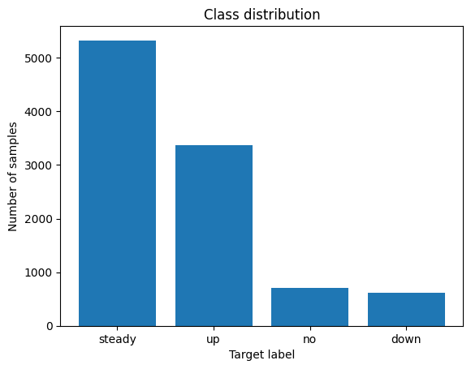

Classifying Insulin Dosages
Background
I wanted to brush up on my machine learning skillset. This project was just to remind me how to use numpy, pandas, matplotlib, and scikit-learn for machine learning.
The dataset I used is available on Kaggle. It consists of data from 10,000 diabetic patients across 150 hospitals in the span of 10 years. The aim of this project was to use data about their medical history and lifestyle to estimate how their insulin dosages should be adjusted (increase, decrease, keep the same, or remove entirely).
Dataset — Kaggle: Insulin Dosage
Data Preprocessing
The data contains, for each patient, a patient id, gender, age, and medical history data including their weight, glucose levels, insulin sensitivity, and average hours of sleep. Target values are located in the last column and can either be "steady", "up", "down", or "no". I first binarized the columns for family_history and gender; then, I used one-hot encoding to represent the food_intake and previous_medication columns.
I then standardized the remaining feature columns. This centers the data around a mean of zero and a standard deviation of one, and is supposed to prevent features with larger scales from dominating models dependent on gradient descent or distance metrics (like the k-nearest-neighbors algorithm).
# Creating binaries
lb = LabelBinarizer()
binarize_map = {
'gender': 'male',
'family_history': 'yes'
}
for col, pos_label in binarize_map.items():
df[col + '_bin'] = np.where(df[col] == pos_label, 1, 0)
# One-hot encoding for food and medications
df = pd.get_dummies(df, columns=['food_intake', 'previous_medications'], dtype = "int")
# Loading features
features = ["gender_bin", "age", "family_history_bin", "glucose_level", "physical_activity", "food_intake_high", "food_intake_low", "food_intake_medium", "previous_medications_both", "previous_medications_insulin", "previous_medications_oral", "previous_medications_none", "BMI", "HbA1c", "weight", "insulin_sensitivity", "sleep_hours", "creatinine"]
X, y = df[features], df["Insulin"]
# Splitting data
X_train, X_test, y_train, y_test = train_test_split(X, y, random_state = 67)
# Standardizing remaining continuous features
exclude = ["gender_bin", "family_history_bin", "food_intake_high", "food_intake_medium", "food_intake_low", "food_intake_medium", "previous_medications_both", "previous_medications_insulin", "previous_medications_oral", "previous_medications_none"]
scale_cols = [col for col in X_train.columns if col not in exclude]
scaler = StandardScaler()
X_train[scale_cols] = scaler.fit_transform(X_train[scale_cols])
X_test[scale_cols] = scaler.transform(X_test[scale_cols])
# For XGBoost
le = LabelEncoder()
y_train_enc = le.fit_transform(y_train)
le.transform(y_test)
Choosing Models and Grid Search
To choose the models I wanted to explore, I used scikit-learn's algorithm cheatsheet to conclude I should try an SVM classifier and a KNeighbors classifier. I also wanted to refresh my base in tree-based ML algorithms so I chose to include XGBoost and Random Forest classifiers.
I used a grid search as opposed to random search as the parameter space I wanted to explore for each model was small. With the help of some research and generative AI I was able to determine which parameters I should test and what values are commonly used in grid searches for each model.
param_grids = {
'logistic' : {
'C': [0.1, 1, 10]
},
'knn' : {
"n_neighbors": [3, 5, 7, 11, 15, 21, 25, 30, 35, 40, 45, 50],
"weights": ["uniform", "distance"],
"metric": ["euclidean", "manhattan"]
},
'random_forest' : {
"n_estimators": [50, 100, 150],
"max_depth": [5, 10, 20],
"min_samples_split": [2, 5, 10],
"min_samples_leaf": [1, 2, 5],
},
'svc' : {
"C": [0.01, 0.1, 1, 10],
"kernel": ["linear"]
},
'xgboost' : {
"n_estimators": [50, 100, 150],
"max_depth": [3, 5, 7],
"learning_rate": [0.01, 0.05, 0.1],
"subsample": [0.7, 0.85, 1.0],
"colsample_bytree": [0.7, 0.85, 1.0]
},
}
I ran into issues with the XGBoost model initially as I forgot the target values can only use numerical values. To resolve this, I used a label encoder to map the original values to 0, 1, 2, and 3. It was interesting to learn that label encoders are only acceptable to use for target values, not features; it indicates to the model that there is some sort of ordinal relationship in the features that might not actually exist (like for previous_medications, where the options are "insulin", "oral", "none", or "both". It's not like one option is "greater" than the other, so it wouldn't make sense to represent this data in a way that implies there is an order to this column.
Data Analysis
I ran the models and found that XGBoost performed extremely well on the training data. Below are the averages and best parameters for each model. For context, I used a random_state param of 67 throughout the project.
logistic best params: {'C': 1}
best performance: 0.8050666666666666
knn best params: {'metric': 'manhattan', 'n_neighbors': 30, 'weights': 'distance'}
best performance: 0.8534666666666666
svc best params: {'C': 10, 'kernel': 'linear'}
best performance: 0.8158666666666667
random_forest best params: {'max_depth': 20, 'min_samples_leaf': 1, 'min_samples_split': 2, 'n_estimators': 150}
best performance: 0.9741333333333333
xgboost best params: {'colsample_bytree': 0.85, 'learning_rate': 0.1, 'max_depth': 3, 'n_estimators': 150, 'subsample': 1.0}
best performance: 0.9961333333333334
Considering the impressive performance of the XGBoost model, I decided to investigate its performance in more depth. I used the optimized model to make a set of predictions on the test data:
precision recall f1-score support
down 0.98 0.98 0.98 146
no 0.99 1.00 1.00 177
steady 1.00 1.00 1.00 1314
up 1.00 1.00 1.00 863
accuracy 1.00 2500
macro avg 0.99 0.99 0.99 2500
weighted avg 1.00 1.00 1.00 2500
I also obtained the following data regarding feature importances:
family_history_bin 0.171230
insulin_sensitivity 0.126042
weight 0.112300
HbA1c 0.100749
previous_medications_insulin 0.088045
previous_medications_none 0.078661
sleep_hours 0.066165
previous_medications_oral 0.055773
previous_medications_both 0.050773
BMI 0.039458
I noticed the data was unbalanced - look at the difference in the number of samples for "steady" vs "no" or "down". I used matplotlib to visualize this imbalance:

This explains why the model performs worse on "down" labels. Using stratified K-fold cross-validation, to maintain an equal proportion of each target class in each fold. I found that f1-scores ranged from ~0.92 to 1, using 50 splits.
I added additional regularization parameters to the grid search to tackle overfitting.